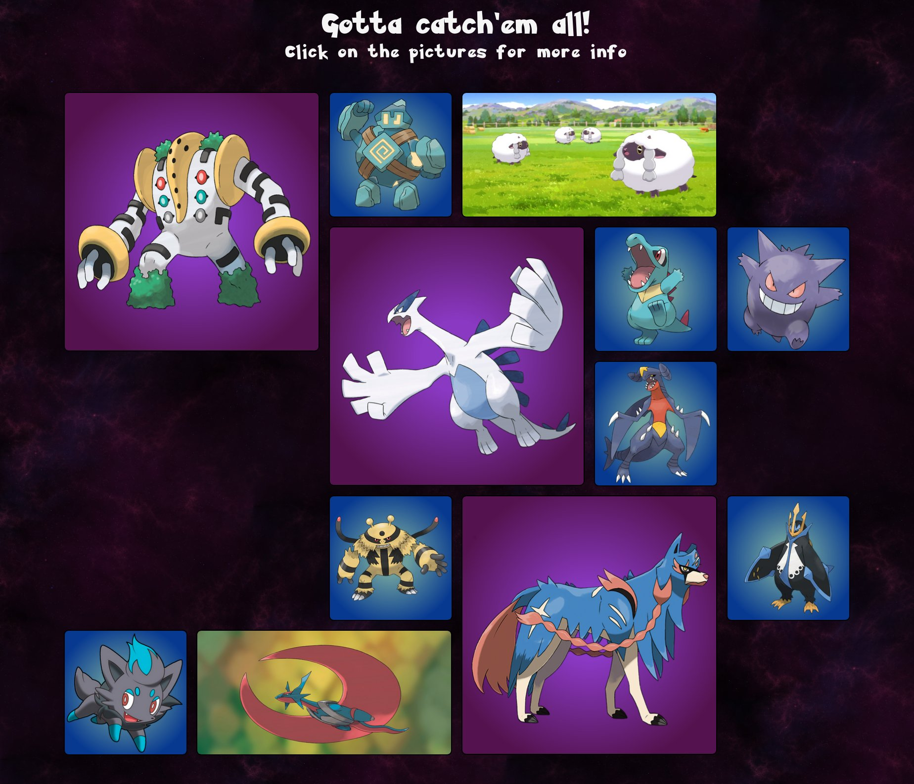

It's magic.
It's awe-inspiring.
It's CSS.
When I found out I was going to be learning how to work with CSS, I was about to break down into tears - happy tears, of course! I could not believe one of my lifelong dreams was about to come true: I would be learning the most beautiful style sheet language in the whole world. It was not always easy, though - there were some bumps on the road. But with my steely determination and the help from my extremely talented, knowledgeable and humble teacher, I was able to overcome every difficulty that came upon me. Maybe learning CSS is the best thing that has ever happened to me; it has spurred my creativity in ways I no longer thought possible. I will always love and cherish CSS and here are some of my delicately crafted webpages to attest to it.
Read more...(Not so) Plain CSS
I am not afraid to admit my first jobs are not exactly stellar. At least I can see a steady progress, and after all, learning a new language was never going to be easy.
I could see CSS was going to be as challenging as fascinating, and that made me all the more excited. We can all see these were no masterpieces, but *Vanilla CSS* is full of charm anyway, don't you think?
Read more...Float? Why not?
We all love floating. It's so much fun and sometimes unpredictable, which makes it even more exciting. When I was learning how to use *floats*, I would often find myself daydreaming and thinking about *the perfect CSS file*.
Would I ever be able to create the ultimate CSS file? Would I ever get millions of people to praise my code's pristine beauty? Only time will tell...
 Read more...
Read more...
Position me, baby!
Location, location, location. That’s all that mattered to me at some point. I was getting frustrated! For some reason some CSS elements refused to position themselves where I wanted them to be. Luckily, my new best friend *position* came to the rescue.
All my prayers had been answered, at last. I positioned elements everywhere at the drop of a hat, and all of them simply complied. I was feeling more powerful than ever before, but the road to enlightenment was still full of twists and turns.
 Read more...
Read more...
Mind-bending FlexBox
Oh, *FlexBox*. You will always be special to me. You showed me there are other ways to design complex webpage layouts, and I will never forget about that. It is as if you unlocked a door for me, a door which lead the way to a magic fantasy land where my creativity could finally run unbridled and free.
I was no longer tied to restrictions - if I could imagine it, I could code it. And that was all thanks to you, *FlexBox*. I am sure we will be friends forever.
 Read more...
Read more...
A serious affair: CSS Grid
Just when I thought I knew how to use CSS, along came *CSS Grid*. I am not gonna lie, I was scared at first. *Grid* is the gateway to a complex, bidimensional world. But at the same time it is so tempting, intriguing and sexy.
With *FlexBox* and *Grid* I felt truly unstoppable, and once I got the hang of it, I finally unlocked all my full potencial as a frontend developer. The world is my oyster now, and I'm certainly here for it. *CSS Grid* made it happen, and it helped me become the best coder I can possibly be.
Read more...When in doubt, be responsive
The icing on the cake was *Responsive Web Design*. I felt like the most powerful wizard, shaping the most intricate layouts and creating order from chaos. Just with a little tweaking, I manifested my most fascinating and out-there ideas onto the code.
CSS had no secrets for me anymore. Finally, I became a superlative "CSS whisperer". *I am CSS and CSS is me*. You can call me a rockstar frontend developer.
 Read more...
Read more...